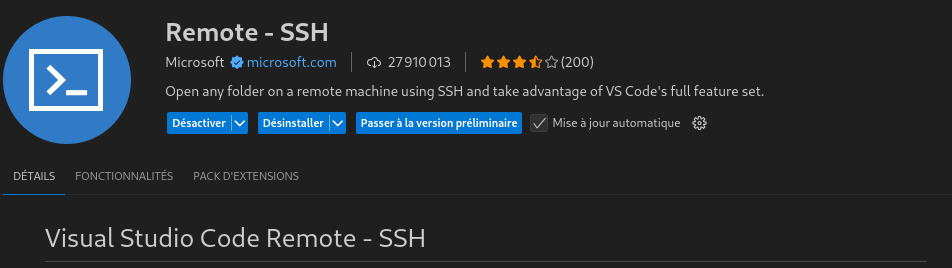
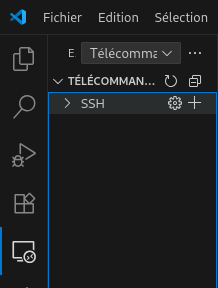

Mount the Remote Directory Locally
Since running the code requires a GPU, the code must already be on the GPU server.
If you are comfortable with tools like vim, that’s fine. But if you prefer using Visual Studio Code (VSCode),
there is a way to mount your remote directory locally in VSCode. This allows you to modify the code on your local editor,
and the changes will be reflected remotely. You can then run the code directly on the GPU server.
First, you need to install the extension: Remote - SSH.

Once the extension is installed, you need to add the remote machine. Click the + button, as shown in the image below:

Type aker.imag.fr and then specify the directory on the remote machine that you want to mount
(e.g., subjective-comment-clf in our case). (You have to be connected on the VPN)
Now open the VSCode terminal. In the next section, we will see how to connect to the GPU and run the code.
Run Code on the GPU
First, check for an available GPU on the website: http://aker.imag.fr/drawgantt/.
Once a GPU is available, run the following command in your terminal:
oarsub -I -p "host='lig-gpu10.imag.fr'" -l /gpu=1,walltime=7:0:0Here's a breakdown of the command:
oarsub: Submits a job to the OAR job scheduler.-I: Starts an interactive session (so you get direct access to the GPU machine).-p "host='lig-gpu10.imag.fr'": Requests a specific host (in this case,lig-gpu10.imag.fr).-l /gpu=1: Requests one GPU.walltime=7:0:0: Sets a maximum job duration of 7 hours.
After submitting the command, wait until the job starts. Once connected, you’ll be on the GPU server and ready to run your code.
Install a Python Environment
Create a virtual environment by running the following command:
python3 -m venv mon_env/Install Requirements
Running the code requires specific libraries and tools.
First, navigate to the subjective-comment-clf folder. There you’ll find a file named require.txt,
which lists all the necessary libraries.
To install them, run:
pip install -r require.txtInstall Ollama (Linux - Without Root Access)
We need to install Ollama. The official installer can be found here: https://ollama.com/download/linux.
However, the installation command on the Ollama website requires root access, which is not available for custom users on the GPU server. Therefore, we need to install it manually.
Follow these steps:
- Go to your home directory:
- Create a new folder where Ollama will be installed:
- Download the compressed Ollama file:
- Extract it into the folder you just created:
- Add Ollama to your
PATHby appending the following line to your~/.bashrcfile: - Reload your
~/.bashrcso the changes take effect: - Check if Ollama is properly installed by running:
cd ~mkdir ollamacurl -L https://ollama.com/download/ollama-linux-amd64.tgz -o ollama-linux-amd64.tgztar -C ./ollama -xzvf ollama-linux-amd64.tgzecho "export PATH=$PATH:$HOME/ollama/bin" >> ~/.bashrcsource ~/.bashrcollama lsDownload the Required Models
Our implementation uses three models. Download them using the following commands:
ollama pull mistralollama pull phi4ollama pull llama3.3